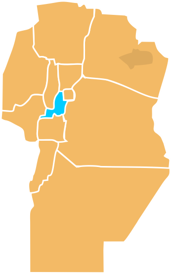

Alta Gracia es un rincón del Valle de Paravachasca donde la cultura
es palpable en cada atractivo.Es uno de los destinos turísticos mas próximos
a la ciudad de Córdoba.
Como gran atractivo, en pleno centro histórico se encuentra
una de las cinco Estancias Jesuíticas declaradas Patrimonio de la Humanidad por la UNESCO.